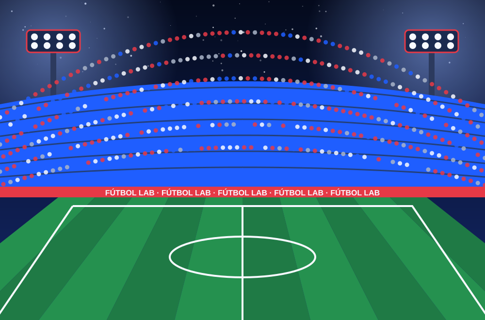
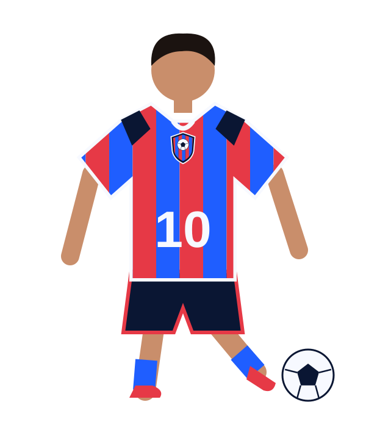
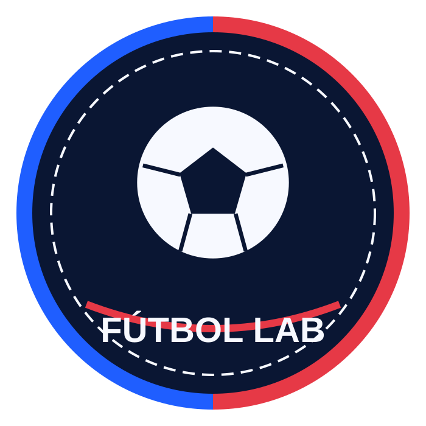

ACADEMIA DIGITAL DE FÚTBOL
EL FÚTBOL SE VIVE.
Entrena técnica, aprende táctica y mejora tus decisiones con una experiencia visual llena de movimiento.
- 12 ejercicios
- 06 instalaciones
- 100% fútbol



PIZARRA INTERACTIVA
UNA JUGADA EN MOVIMIENTO.
Nuestros jugadores (azul y rojo) se desmarcan hacia delante, los rivales (blancos) se repliegan y el balón simula un pase. El movimiento explica la jugada mejor que un dibujo estático.
Puedes congelar la jugada en cualquier momento para estudiarla.
10
7
9
8
4
5
2
6
⚽


NUESTRA IDENTIDAD
UNA MARCA. UN EQUIPO.
Pulsa cada logotipo para darle la vuelta y ver dónde se utiliza.
¿LISTO PARA SALTAR AL CAMPO?
Doce ejercicios con instrucciones, material y variantes.